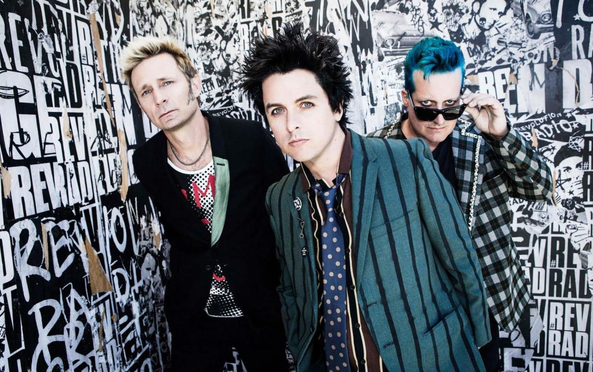
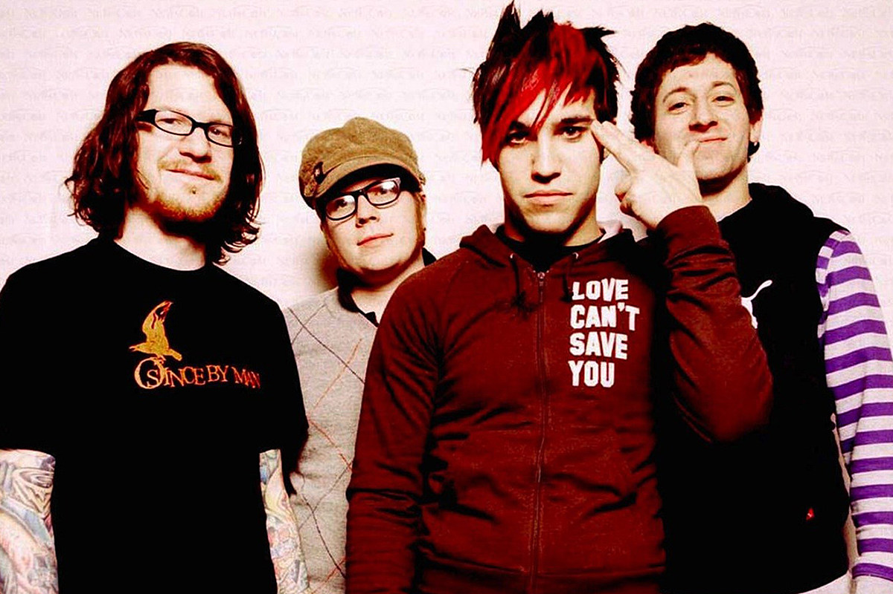

Historia do Rock and Rolll
Rock and roll nos anos 2000
Nos anos 2000, houve um renascimento do garage rock e um aumento da popularidade do indie rock, um subgênero mais cru e descomplicado do rock, frequentemente associado a um retorno às raízes do gênero, com foco em energia e simplicidade. As bandas que se destacaram nesse estilo são: The Strokes, White Stripes e Arctic Monkeys.
O rock alternativo continuou a se expandir e diversificar nos anos 2000, com bandas incorporando influências de vários gêneros, como o emo, o post-punk revival, o rock eletrônico e até o metal. A década também testemunhou o aumento da popularidade de bandas que surgiram nos anos 90, mas que continuaram a dominar as paradas ao longo dos anos 2000. Por exemplo: Linkin Park, Coldplay e Muse.
O emo emergiu como um dos subgêneros mais populares e polarizadores do rock nos anos 2000. O movimento é uma evolução do hardcore dos anos 80, com ênfase nas emoções e nas experiências pessoais, frequentemente explorando temas de dor, angústia e relacionamentos. Algumas das bandas emos mais famosas são: Fall Out Boy, My Chemical Romance e Panic! at the Disco.
O punk rock teve uma revitalização nos anos 2000, especialmente com o movimento pop punk, que se tornou uma das formas mais populares de rock da década. As bandas de pop punk misturaram a energia e a atitude do punk com melodias mais acessíveis e letras mais leves, frequentemente centradas em temas de juventude, diversão e rebeldia. Muitas bandas surfaram nessa onda, dentre elas: Green Day, Blink 182 e Avril Lavigne.